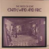
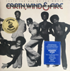
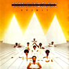
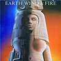

Earth, Wind & Fire ist eine amerikanische Soul- und Funk-Band, die 1969 in Chicago von dem Jazzschlagzeuger Maurice White gegründet wurde. In Deutschland waren ihre erfolgreichsten Stücke September und Boogie Wonderland.
Ihr Stil ist beeinflusst von Soul, Funk, Motown, afrikanischen Elementen (Kalimba) und modernen Pop-Rhythmen, die sie in den christlichen Gemeinden ihrer Umgebung sammelten. Im Besonderen wurden sie bekannt durch ihre Bläsergruppe – die Phenix Horns. Ein markantes Merkmal ihres Sounds ist der Falsett-Gesang ihres Sängers Philip Bailey aus Denver, der kurz nach Veröffentlichung des ersten Albums zur Gruppe stieß.
Die weltweit präsentierten Bühnenshows von Earth, Wind and Fire zeichneten sich besonders in den 1980er Jahren durch ihre bunten, aufwändigen Kostüme und die außergewöhnliche Choreographie aus.
| Albumcover | Titel | Erscheinungsjahr |
|---|---|---|
|  | The Need Of Love | 1971 |
|  | That's The Way Of The World | 1975 |
|  | Spirit | 1976 |
|  | Raise! | 1981 |